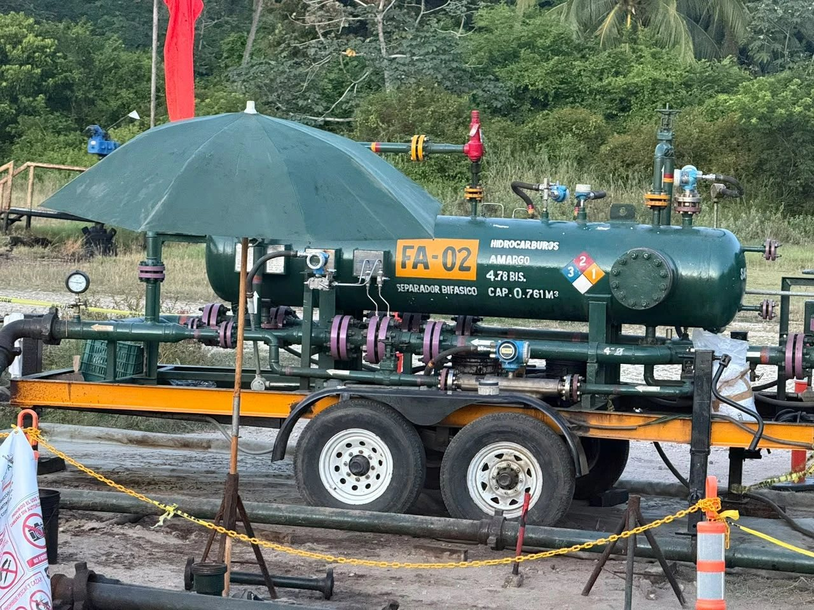

Ficha técnica
Entregable 2 · Corte interno
¿Cómo separa el separador bifásico?
Vista en sección del recipiente horizontal: la mezcla del pozo entra, choca, se separa en gas y líquido y cada corriente sale medida. Recorra los 6 pasos o deje que se reproduzcan solos.
Código de colores
Corrientes y señales

Qué hay adentro